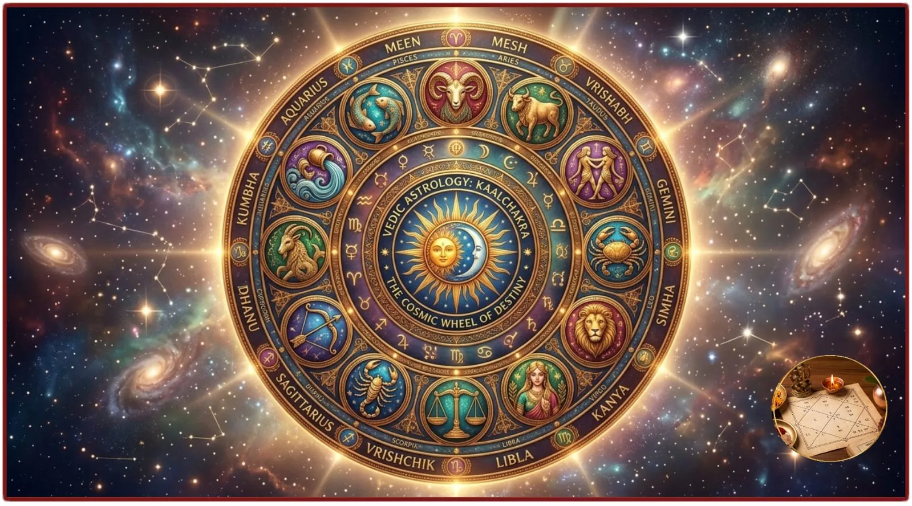
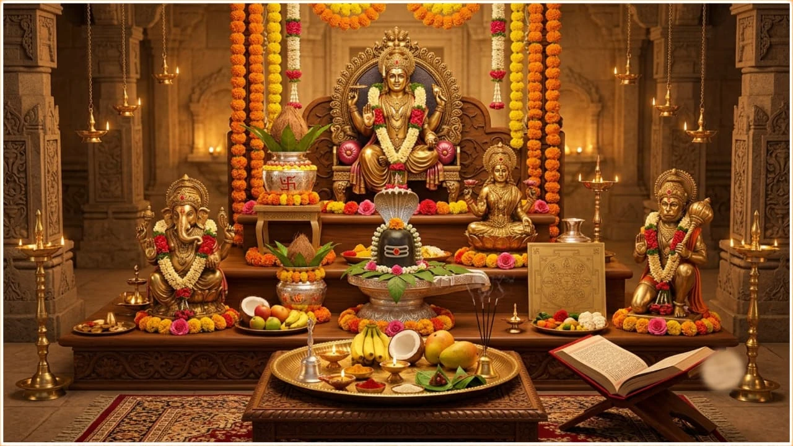
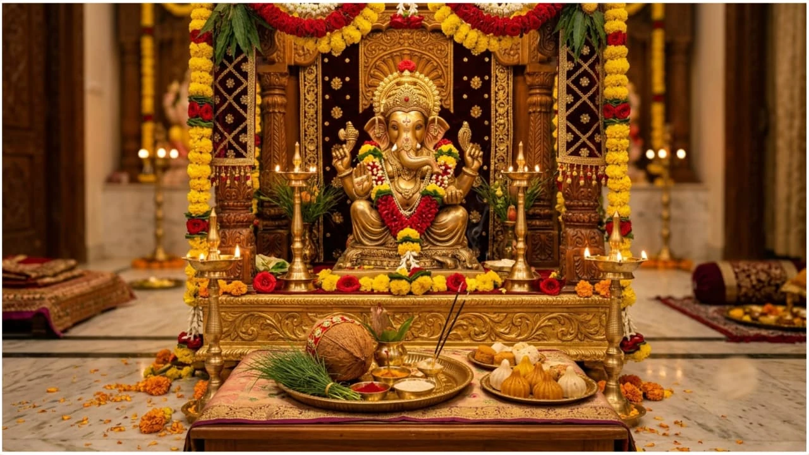
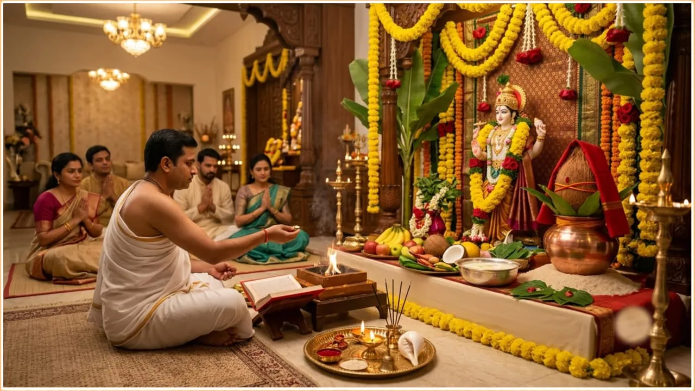
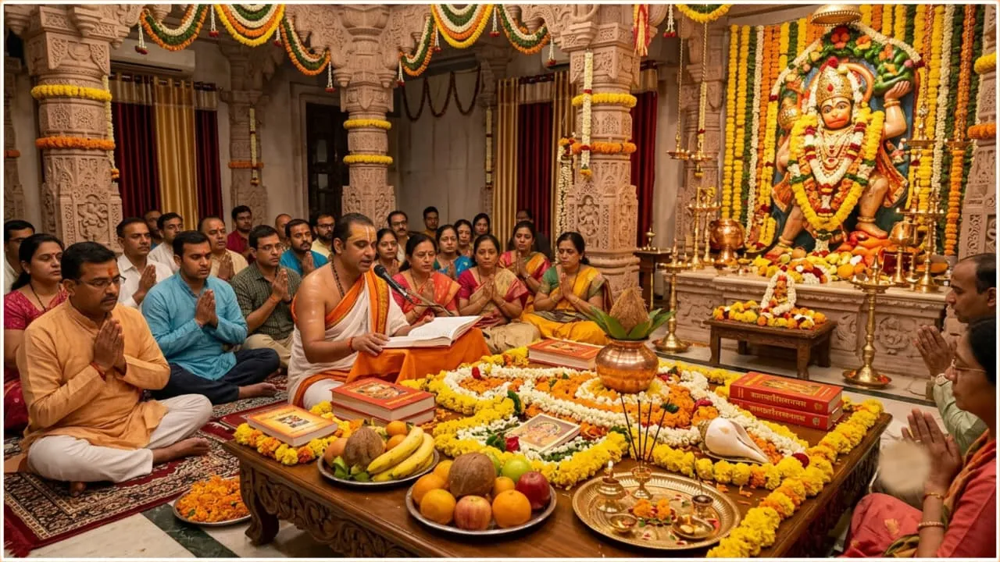
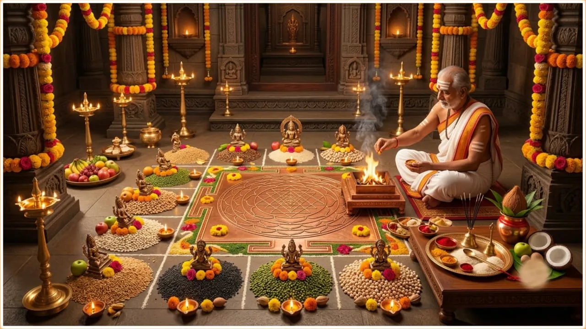
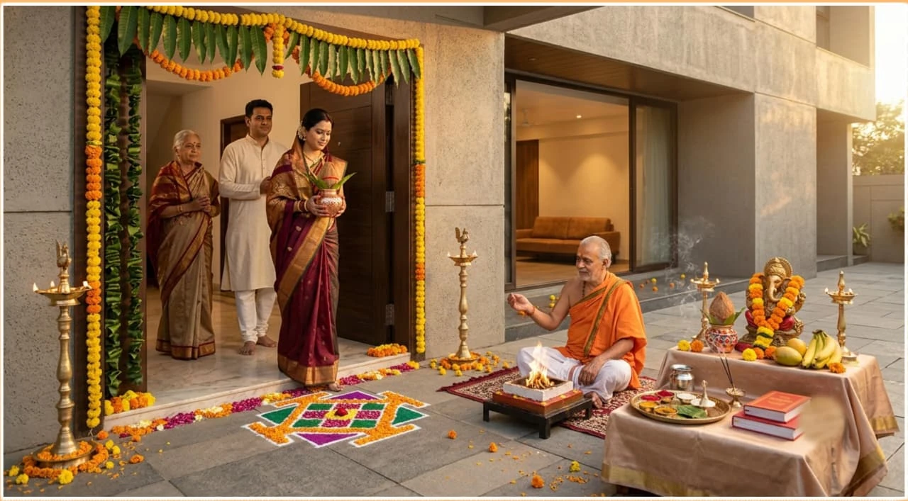
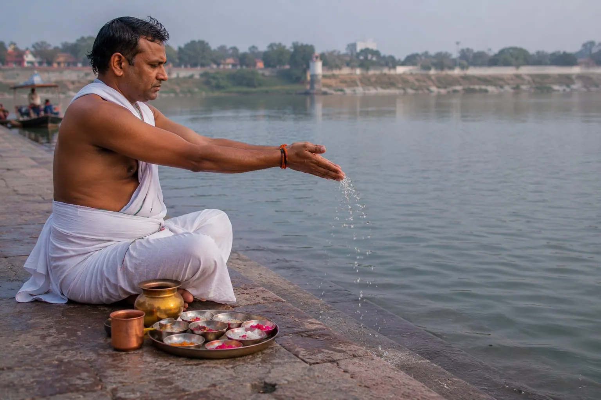
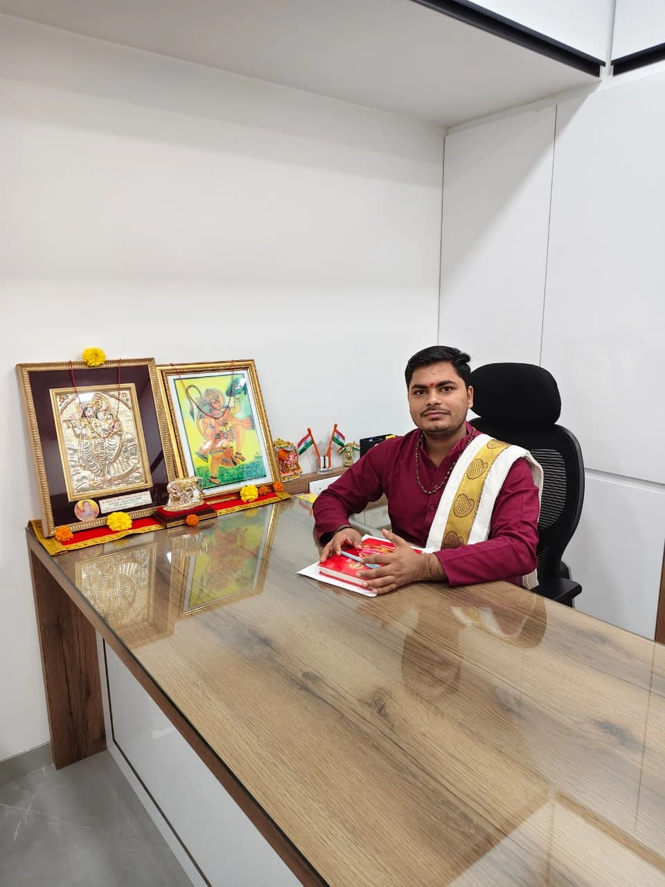

All Astrology Services
A complete range of astrology offerings for marriage, career, health and Vastu in one place.
Ask about thisAstrology & Vedic Remedies
Your Noida life needs clear guidance — especially when important decisions involve marriage, business, family or health. Shree Shiv Divy Astrology Centre brings you online Puja booking, Pandit services and astrology consultation in Noida without the confusion. Our Pandits are available for remote consultations, Vastu guidance, kundli matching and digital Puja rituals that are suited to the rhythms of Noida. We explain how planetary timing affects your career, relationships and wellbeing, and suggest remedies you can actually follow. Whether you want an online Puja for Ganesh, Navagraha, Pitru or Satyanarayan Katha, your booking is handled by experienced priests who honour tradition and keep the process easy for busy Noida families. Choose a trusted Noida astrologer who answers your questions straight and supports you through the next steps.

What We Read
Every reading starts with your kundli — not a generic script. Pick the area you need clarity on.
A complete range of astrology offerings for marriage, career, health and Vastu in one place.
Ask about this
All major Puja rituals with authentic Vedic procedures and full guidance.
Ask about this
Ganesh Puja performed according to tradition to invite auspicious beginnings.
Ask about this
Satyanarayan Katha with complete ritual support for prosperity and protection.
Ask about this
Sundarkand Path with proper recitation and puja protocol for spiritual uplift.
Ask about this

Griha Pravesh Puja for a blessed home entry with auspicious rituals.
Ask about this
Complete Pitru Puja, Shraddha, Tarpan, Pind Daan, Narayan Bali, Tripindi Shraddha, Pitru Dosh Nivaran, and ancestral peace rituals performed according to authentic Vedic traditions.
Ask about thisWhy Families Come Back
A dedicated Noida service team that treats your online Puja booking and astrology consultation as a personal priority.
Online Puja scheduling for Noida devotees, with a trusted Pandit ready to perform the ritual at the right muhurta.
Astrology consultation that addresses marriage, career, relationships and Vastu in the context of Noida living.
Vedic rituals in Noida handled with care, authenticity and clear guidance from start to finish.
Transparent fees and honest explanations so Noida clients book with confidence and no surprises.
Follow-up support after your Noida consultation so you can act on the remedies with clarity.
How It Works
Named after the four houses of the kundli that matter most to a first reading.
Call or WhatsApp us with your birth details — date, time and place.
A focused session on your actual question, in person or by video/phone.
Clear next steps and, if genuinely needed, a remedy explained in full.
We check in on progress and adjust guidance as your situation moves forward.
Verified Google Reviews
"Excellent Pandit Ji. Professional, knowledgeable, and performed the puja with complete Vedic rituals. Highly recommended."
✅ Google Verified"Bahut badhiya" — Very good experience.
✅ Google Verified"Bahut sahi" — Spot on reading.
✅ Google Verified"Very nice 💪 Pandit ji."
✅ Google Verified
Our Story
Shree Shiv Divy Astrology Centre is the online Puja and astrology service trusted by families across Noida. We combine traditional Vedic ritual knowledge with digital booking ease so you can reserve a Pandit, confirm a ceremony and receive a full astrologer review without a long wait.
Our Noida services are built for busy schedules, whether you need a phone consultation, WhatsApp session or in-person support. We help with Ganesh Puja, Navagraha Puja, kundli matching, Vastu guidance and remedy advice that is relevant to your specific life stage.
Every offering is designed to speak to Noida residents who want authentic ritual care and practical astrology answers. The Pandits we work with are experienced in the kind of online Puja booking and consultation that families, professionals and festival organisers in Noida rely on.
If you are looking for a Pandit in Noida for online Puja or Vedic rituals, we make the process transparent and supportive. You can also explore nearby pages for Delhi · Gurugram · Chandigarh if your plans extend to neighbouring areas.